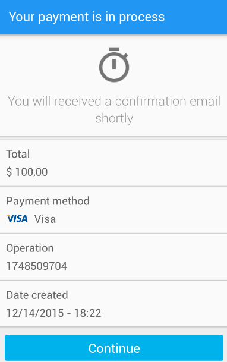

Make a payment
To create a payment, the basic information needed is:
- MercadoPago’s token
- Payment method
- Issuer (if needed, some payment methods don’t need it to be sent)
Also, you may want to specify:
- Installments
- Discount
Create a MerchantPayment object:
MerchantServer.createPayment(activity, DUMMY_MERCHANT_BASE_URL, DUMMY_MERCHANT_CREATE_PAYMENT_URI, payment, new Callback<Payment>() {
@Override
public void success(Payment payment, Response response) {
//Handle payment
}
@Override
public void failure(RetrofitError error) {
LayoutUtil.showRegularLayout(activity);
Toast.makeText(activity, error.getMessage(), Toast.LENGTH_LONG).show();
}
});
Display payment result
We recommend to use our UI solutions to display the payment result. The result should be different for instant payments or offline payment methods, such as atm or ticket. You can check wheter a payment is automatic or not and start a corresponding UI as follows:
if(MercadoPagoUtil.isCardPaymentType(payment.getPaymentTypeId())) {
new MercadoPago.StartActivityBuilder()
.setActivity(mActivity)
.setPayment(mPayment)
.setPaymentMethod(selectedPaymentMethod)
.startCongratsActivity();
} else {
new MercadoPago.StartActivityBuilder()
.setPublicKey(mMerchantPublicKey)
.setActivity(mActivity)
.setPayment(mPayment)
.setPaymentMethod(selectedPaymentMethod)
.startInstructionsActivity();
}
}
Online payments
If the payment method was online, you'll see a congrats screen:

Also, payments could remain pending...
...or be rejected:

Offline payments
If the payment method was offline, you'll see a screen with instructions like:

You can implement your own UI to show the result of the payment. Payment has a "status" attribute, that could be one of the following:
approved
pending
in_process
rejected